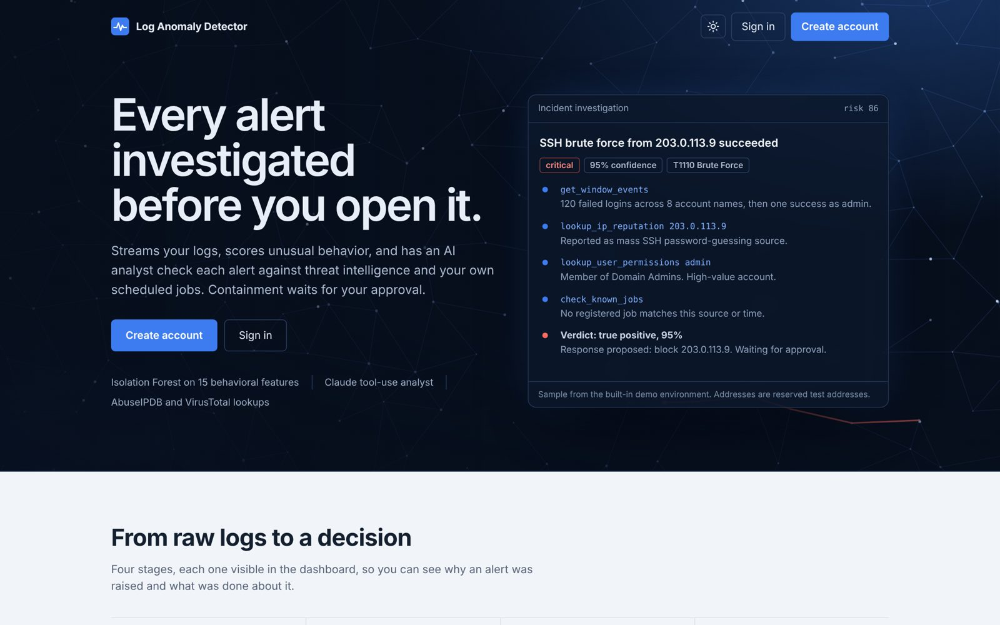
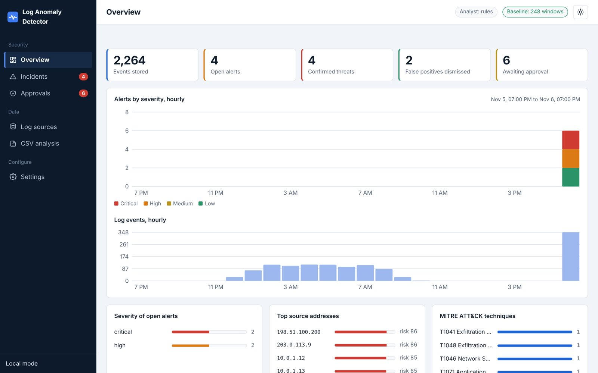
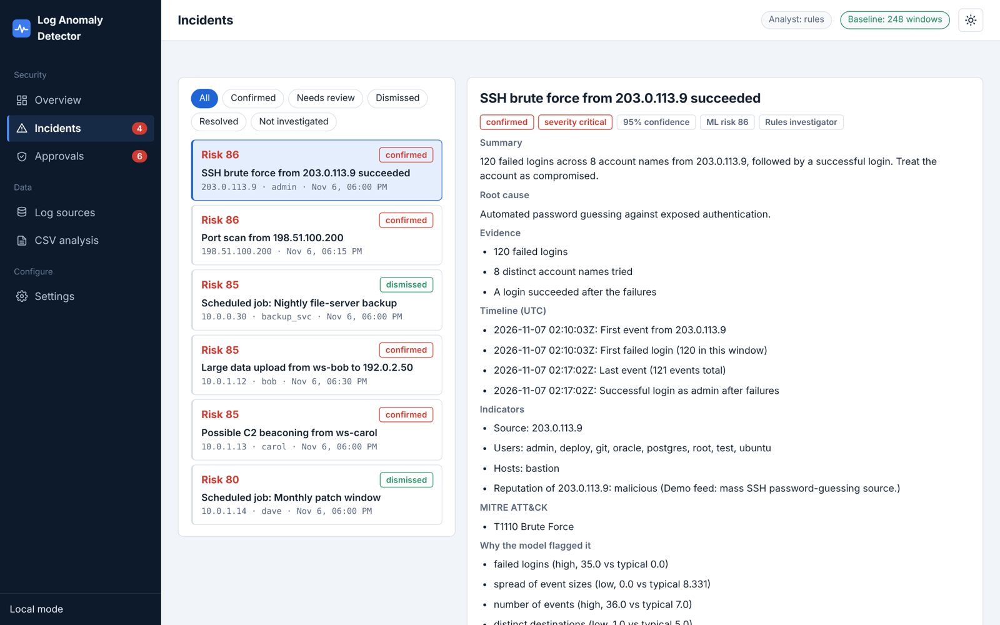
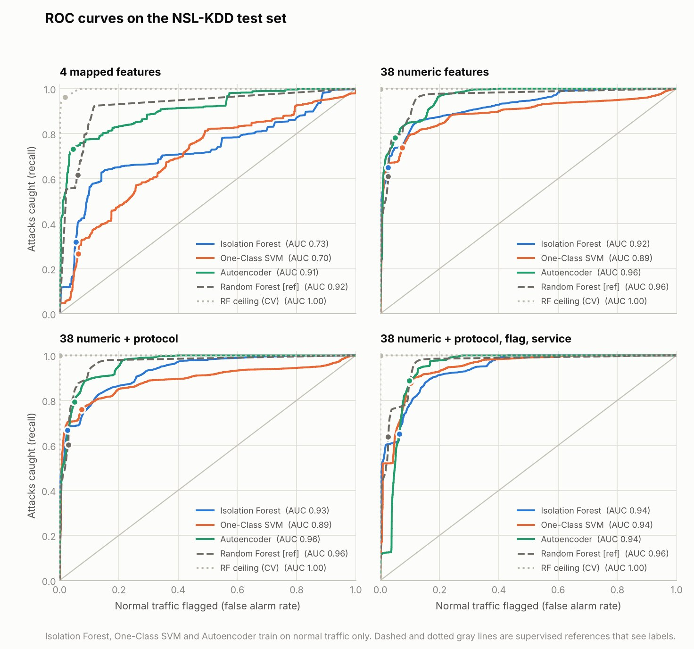

AI-Driven Log Anomaly Detector
From a machine-learning notebook to an agentic threat detection and response platform: it learns what normal looks like for your logs, flags what doesn't fit, investigates it, and proposes a response that a human approves.

What it does
Detect
Groups events into time windows per source, builds 15 behavioural features (failed-login ratio, off-hours activity, port spread, byte volume) and scores them with an Isolation Forest trained on your own baseline.
Investigate
An analyst agent (Claude, with a rules fallback) pulls events, checks IP reputation, maps findings to MITRE ATT&CK and writes a verdict with evidence and a timeline.
Respond
Proposes actions such as blocking an IP or disabling an account. Nothing runs until an analyst approves it; webhooks are guarded against SSRF.
Ingest
A Linux log shipper tails auth logs and posts them with a per-account token. Each account's data is isolated.
Accounts
Salted scrypt passwords, signed HttpOnly sessions, rate limiting, email verification and password reset (single-use hashed tokens, sessions revoked on reset).
Desktop
An Electron wrapper that connects to your deployment.


Benchmarking the models
I evaluated the detectors on NSL-KDD with a strict protocol: unsupervised models train on normal traffic only, and are tested on KDDTest+ (22,544 connections, 57% attacks, including attack types never seen in training). Labels are used only to score. Two reference points use labels: a supervised Random Forest trained on the labeled training set, and the same forest cross-validated as an upper bound.
| Detector | F1 | ROC AUC | Notes |
|---|---|---|---|
| Isolation Forest | 0.779 | 0.924 | Used in the live platform |
| One-Class SVM | 0.823 | 0.890 | 10,000-row training sample |
| Autoencoder (new) | 0.860 | 0.960 | Best unsupervised model on these features |
| Random Forest, supervised | 0.748 | 0.958 | Misses attack types it never saw |
| Random Forest, cross-validated | 0.998 | 1.000 | Ceiling when every attack type is labeled |
38 numeric features, single run with a fixed seed, precision/recall/F1 for the attack class. The cross-validated row is scored on the training file, so it is a ceiling and not directly comparable.

What I learned
- A reconstruction-error autoencoder beat Isolation Forest (ROC AUC 0.96 vs 0.92) with no labels, and recovered attack types the others missed, such as password guessing and process-table floods.
- The supervised forest scored below the unsupervised models on F1 on the real test split: it ranks well but misses unseen attack types. Cross-validation, where every attack type appears in training, reaches 0.998. The gap between the two is the practical argument for anomaly detection.
- Choosing features mattered more than choosing the model: the four-feature version caught under a third of attacks; 38 features roughly doubled recall.
- Caveat: NSL-KDD is old and not representative of modern traffic, and these are single-seed results. The autoencoder is a benchmark result only; the live platform still uses Isolation Forest.
Engineering notes
- Serverless on Vercel with Neon Postgres; one query layer that also runs on SQLite, with the test suite (200 tests) running against both.
- Fail-closed auth: no secret means no access. Reset links are single-use, stored as hashes, and confirmed with a POST so mail scanners cannot consume them.
- Verified end to end on Linux: log shipper, baseline, simulated SSH attack, incident, human approval.